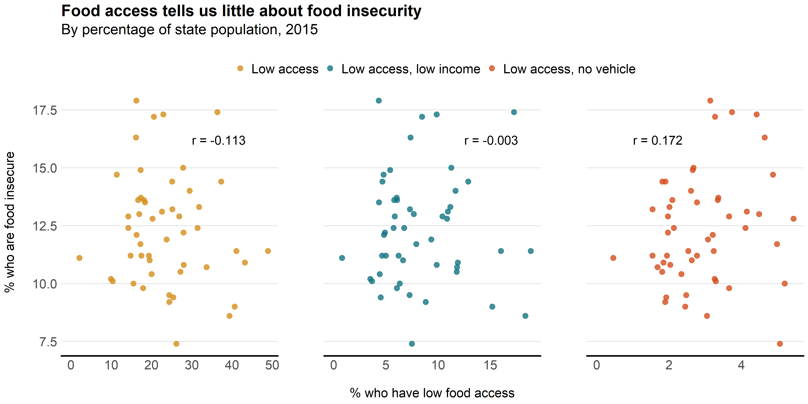
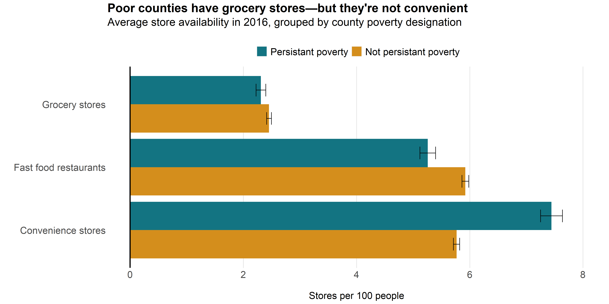
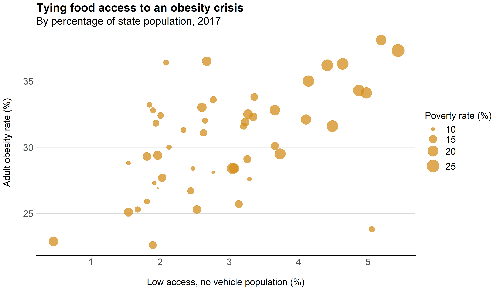

Phrases like “Food Desert” Don’t Do Justice
Samantha Roman | December 27, 2020
“It's an outsider term.”
We often hear the term “food desert” used to describe neighborhoods with limited access to healthy foods. To many, the term is synonymous with food insecurity, which in 2019 affected 35.2 million people in the U.S. With that term comes imagery of barren landscapes and the notion that these problems can be addressed solely by increasing food store availability. But in the words of food justice activist Karen Washington, “‘food desert’ sugarcoats what the problem is.” To call attention to the inequalities pervading our food system, Washington uses the term “food apartheid.” Challenging our misconceptions around food insecurity’s root causes and impacts is the first step in addressing food injustices.
Data from the U.S. Department of Agriculture’s Food Environment Atlas were used to evaluate the factors that influence food access. The dataset is comprised of more than 280 variables, including food access and insecurity, health, socioeconomic characteristics, and food store availability—the charts below only scrape the surface of these relationships.
Beginning the conversation
Terms like “food desert” make us think that food insecurity is something that can be defeated by increasing access alone, when in fact, food insecurity is a multifaceted problem. It’s natural to think this way—food proximity is a tangible issue with a straightforward solution: build more fresh food retailers. However, this captures only a portion of the injustices these neighborhoods face. Below we see just how little food access tells us about food insecurity.
Here we see the limited relationship between the percentage of each state’s population that qualified as “low access” (x-axis) and as “food insecure” (y-axis) in 2015. The USDA defines low access as the “number of people in a county living more than 1 mile from a supermarket or large grocery store if in an urban area, or more than 10 miles from a supermarket or large grocery store if in a rural area.” Food insecurity reflects households that were unable at times during the year to provide “enough food for an active, healthy life for all household members.” Even as we add more qualifiers to the low access population, such as low access/low income or low access/no vehicle, the correlation coefficients remain near zero. Food insecurity is a complex issue and seeing it through an access-only lens doesn’t capture the full concept.
Interrogating our assumptions
“Food desert” implies landscapes devoid of fresh food sellers. A common citation in food access reports is that there are over 3 times as many supermarkets in higher income areas when compared to lower income areas. However, this data comes from 2001, and numbers have changed since then, in part due to the nearly $500 million spent by the federal government between 2011 and 2016 to improve food store access. The current store disparity between higher and lower income counties isn’t exactly what we might expect.
We can compare the number of food retailers per 100 residents in 2016 between persistent poverty counties (> 20% poverty rate for 1980-2000 decennial censuses and 2007-2011 ACS estimates) and non-persistent poverty counties. Perhaps surprisingly, there is no striking difference in the number of grocery stores between the two income levels. Again, against conventional wisdom, there are less fast food restaurants in persistent poverty counties even though the opposite is commonly pointed to as a cause for health disparities between income levels. The greatest difference is in number of convenience stores, where persistent poverty counties have more convenience store availability. These three comparisons suggest that physical access cannot be the most influential factor in food access and health: affordability and food preferences determine how food retailers are utilized in different communities.
A health crisis
When we say “food desert” our minds tend to think of hunger. But there is more to the health disparities—food injustices in these communities result in higher rates of obesity, hypertension, and diabetes. Washington says that “people [in these communities] will tell you that they do have food,” and as we saw above, those healthier options are technically available. But a study in Philadephia found that “when given the opportunity very few people try and switch to using newer or better provisions within their local community.” Another study in Pittsburgh looked at whether the addition of grocery stores in urban areas improved health outcomes; they did not see lasting improvements. The type of data that inspires these studies is shown below.
We are, again, looking at the percentage of a state population that qualifies as low access with no vehicle. Instead of food insecurity, we look at percentage of state population that was obese in 2017. There is a positive correlation between the two – the greater the low access population, the higher the obesity rate. And, as represented by circle radius, the higher the poverty rate. Clearly, there are relationships between access, income, and health, but if the previously mentioned initiatives fail, we must realize that our solutions were not likely looking at the full picture. These neighborhoods are victim to deeply ingrained, unhealthy food habits that bar them from attaining healthier lifestyles.
If we take our assumptions as facts and never seriously consider residents’ experience, we won’t find effective solutions. It’s true that there is no straightforward solution—income, race, education, and access, among others, influence food insecurity and health disparities, and none of these things are easy to solve. Despite this, recognizing the full picture of our food system issues is the first step to coming to a solution. As Washington says, using the term “food apartheid” helps us put this into perspective and “brings us to the important question: what are some of the social inequalities that you see, and what are you doing to erase some of the injustices?”